From a 3D model to flat parts: laser, CNC router or 3D printer
A laser cutter and a CNC router cut flat sheets. To make a 3D shape from them, you cut the model into flat parts and put the parts back together. A 3D printer can make the same flat parts. Lamina is a free laser and CNC slicer that does this for you. It runs in your browser, and your model stays on your computer.
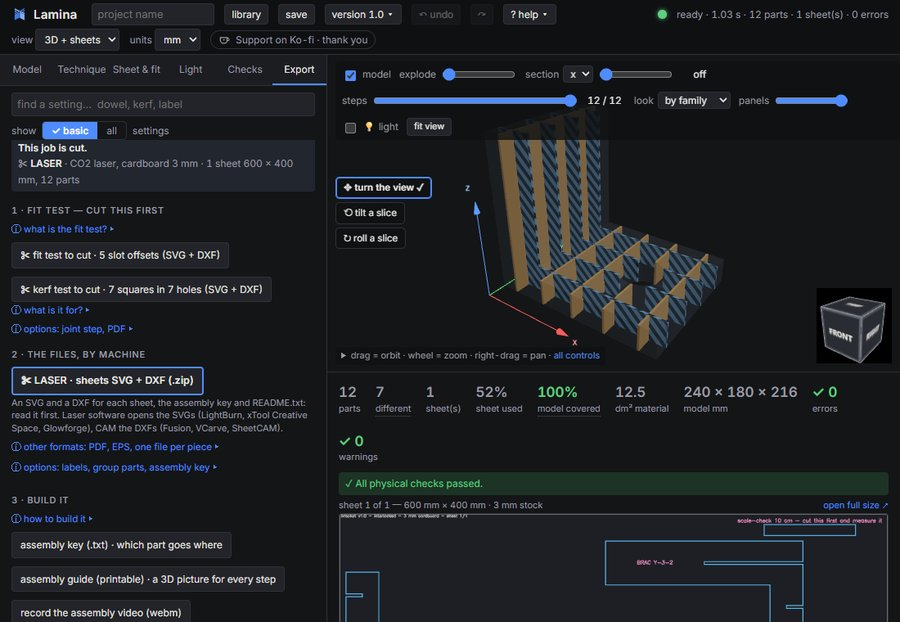
- 1. Start here: this pageThe steps every job has, whatever the machine and the technique.
- 2. Your machineLaser, router or 3D printer, the material and its thickness. Open
- 3. Your techniqueThe settings of one technique, and what each one changes. Stacked, Interlocking, Folded, Radial, Curve, Plaque or Bands
What a laser slicer does
A 3D-printing slicer makes G-code: the layers of plastic for a printer. A laser slicer makes flat parts that you cut from a sheet: plywood, MDF, acrylic, cardboard, paper or sheet metal. Lamina calculates every part. Then it checks that the parts hold together, packs them on your sheets and writes the cut files. To print the parts instead, it packs them on your printer's plates and gives your 3D-printing slicer one 3MF per plate.
The steps every job has
Every picture on this page shows one model: the bracket example that the link opens, in interlocked slices. An orange ring with a label marks the control to use. The tabs go in the order of the work: Model, Technique, Sheet & fit, then Export.
Your model
- Open Lamina in your browser. It opens on the Model
tab, with the bracket example. You can also install it on Windows, macOS or Linux.
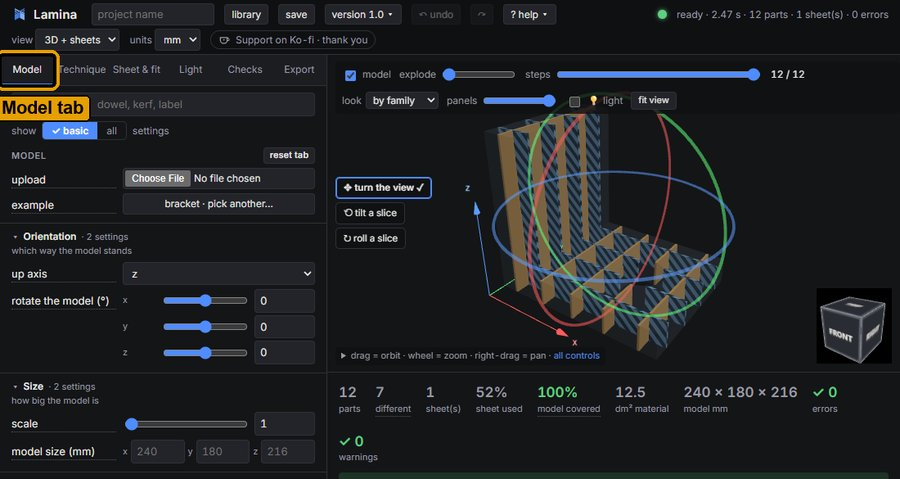
- In upload, choose your model file. Lamina reads STL, OBJ, 3MF, PLY, OFF and GLB files, and STEP or
BREP with the CAD extra.

- If the model lies on its side, click the turn buttons until it stands upright.
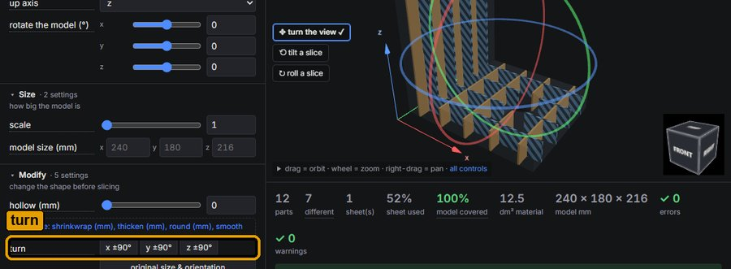
- In model size (mm), type the height of the finished piece in the z box. The x and
y boxes follow. The size changes the number of parts and of sheets more than any other setting.
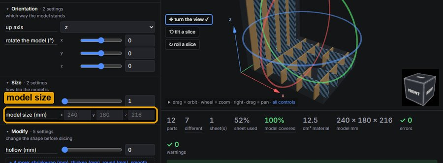
Your technique
- On the Technique tab, click a construction technique. Each technique has its own settings, and a
guide shows what each one changes: Stacked slices,
Interlocking slices, Folded panels,
Radial slices, Curve ribs, Plaque,
Band lattice.

Your machine and your sheet
- On the Sheet & fit tab, under What you make with, click your kind of machine. Lamina then
shows the settings that machine needs: Laser, router or 3D printer.
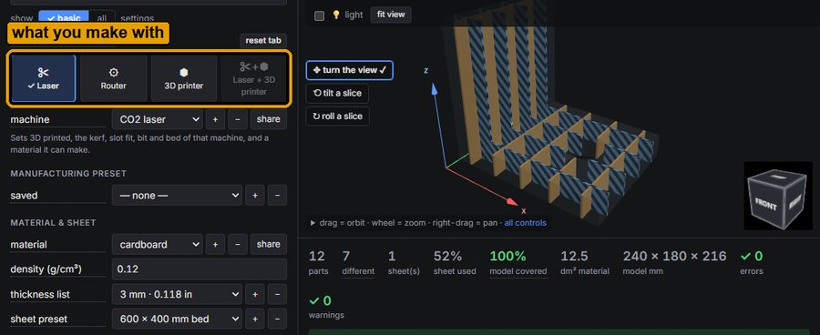
- In machine, pick your machine. It sets the kerf, the slot fit and the bed size of that machine.
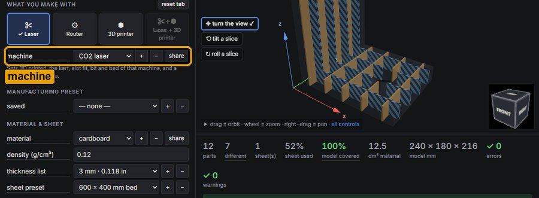
- In material, pick your material.
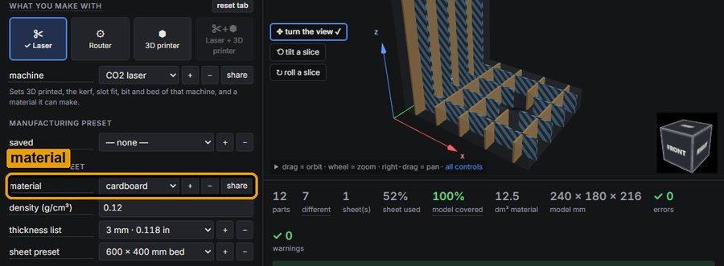
- In thickness (mm), type the real thickness of your sheet. Measure it with calipers: every slot and
every hole is cut to this number.

The checks, the fit test and the files
- Read the errors and warnings under the 3D view. They name each part that floats, breaks or
cannot go in. Most messages have a button that fixes the problem. Correct every error before you cut.

- On the Export tab, click fit test. Cut it from the same sheet as the parts.
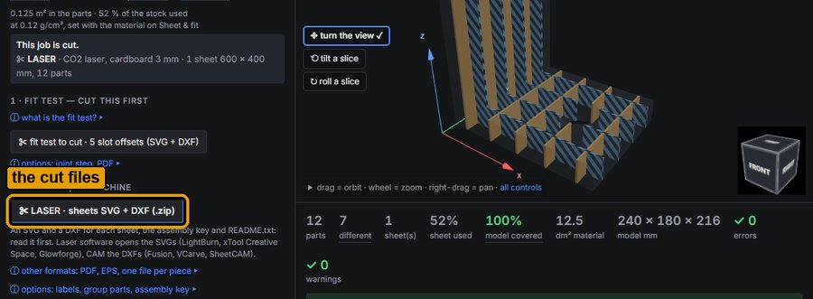
- Push each of the five joints of the fit test together. On the Sheet & fit tab, type the number of
the loosest joint that still holds into slot offset (fit).
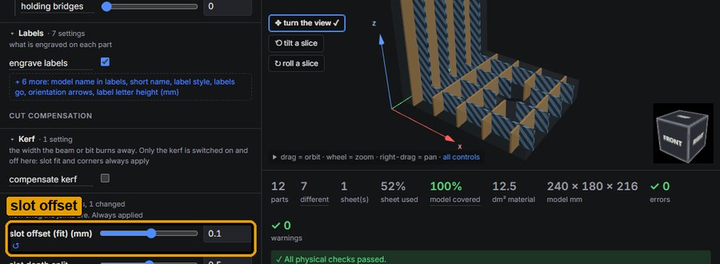
- On the Export tab, click the main file and cut the sheets. The .zip holds the sheets as SVG and DXF,
the assembly key and a README.
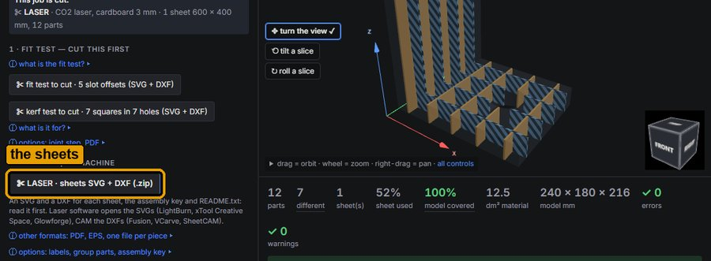
- To see the order the parts go in, drag steps over the 3D view.
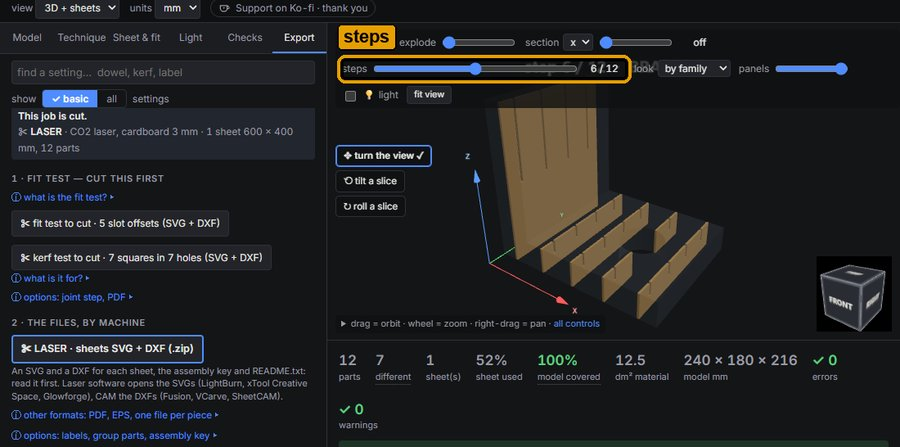
Seven ways to build the model

Stacked slices
Flat layers along one axis, glued or on dowels. The topographic look.

Interlocked slices
Two families of slices that slot together like an egg crate.
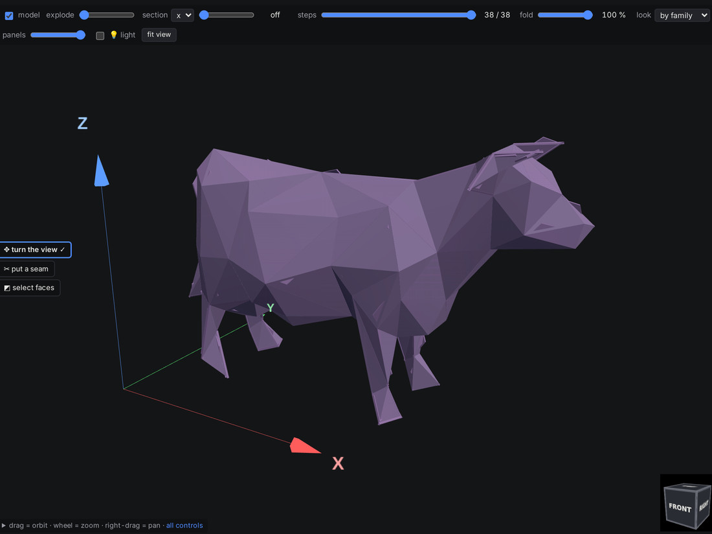
Folded panels
The surface unfolded flat, scored, folded and joined. Papercraft and more.

Radial slices
Half-slices round an axis, held by rings. For vases, heads and lamps.

Curve, ribs
Ribs square to a curve you draw, like the frames of a hull.

Plaque
Slices standing on a back plate, for the wall.

Band lattice
Rings in three directions, half-lapped where they cross.
The files you get
- SVG and DXF, with separate layers for outer cuts, inner cuts, score lines and labels. The SVG opens in LightBurn, the Glowforge app and xTool Creative Space.
- PDF with one page per sheet, and EPS per sheet.
- One file per piece if your cutter wants them that way, with a cut list.
- Labels in a single-stroke font, so the laser engraves each letter in one pass.
- Print plates: one 3MF per plate, with the layer height, bridges and supports set for each part. The 3D printing guide.
- 3D files: STL and STEP of the result, and a scaled 3MF prototype to test-print before you cut.
Made with Lamina

Charging bull on a rock
Stacked slices, by Colin Robinson

Giant dragon head
Interlocked slices, by jarkien

Steel sphere
Radial slices, by Marcel
More in the gallery.
Free, and on your computer
Lamina is free software under the AGPL-3.0. It needs no account and uploads nothing. It replaces Autodesk's discontinued Slicer for Fusion 360, and it does more: see the comparison. It is young, so test-cut before you use expensive material, and tell me what broke.